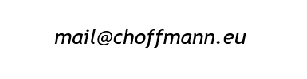

Dies ist eine Website über meine Arbeit und mich, Clemens Hoffmann. Bei Fragen nehmen Sie gern Kontakt mit mir auf.
Arbeitsfeld
Als europäischer Föderalist setze ich mich für die weitere Demokratisierung der EU ein. Ich habe dabei verstärkt mit dem europäischen Wahlrecht auseinandergesetzt und einen Weg gefunden, wie eine Reform auch ohne Einstimmigkeit im Rat umgesetzt werden kann.
Der Ansatz basiert auf dem Tandemsystem von Jo Leinen und Prof. Pukelsheim. Bei diesem bilden die Mitgliedsparteien einer europäischen Partei bzw. einer Fraktion des Europäischen Parlaments eine transnationale Listenverbindung. Wie viele Sitze diese Listenverbindung erhält basiert allein auf deren Stimmanteil auf europäischer Ebene. Die Sitze der Listenverbindung werden anschließend auf die Mitlgiedsparteien aufgeteilt, dabei bleiben die Sitzkontingente der Mitgliedstaaten unangetastet.
Das Tandemsystem kann modifiziert werden, sodass bei der Verteilung der Sitze der Listenverbindungen auf die Mitgliedstaaten Opt-outs gewährt werden können. Das heißt manche Mitgliedstaaten verteilen ihre Sitze wie gehabt, während die sich beteiligenden Mitgliedstaaten dafür Sorgen, dass die Listenverbindungen die richtige Anzahl an Mandaten bekommen. Ich spreche deswegen von einem partiellen Tandemsystem.
Dieses partielle Tandemsystem ist entsprechend nicht auf die Mitarbeit aller Mitgliedstaaten angewiesen. Es kann daher auch ohnen sie über einen zwischenstaatlichen Zusatzvertrag oder den Mechanismus der verstärkten Zusammenarbeit eingeführt werden.
Auch transnationale Listen können mit dem Tandemsystem kombiniert werden. Dies ist sogar mit dem partiellen möglich, indem die Mitgliedsparteien einer Listenverbindung ihre Listen mit den Kandidierenden der transnationalen Liste beginnen lassen. Bei erfolgreicher Wahl bekäme die Kandidierenden der transnationalen Liste also "nationale" Sitze. Mit einer zusätzlichen Regel wird garantiert, dass sich diese ausgewogen auf die Länder verteilen.
Das partielle Tandemsystem ist auch Teil der Beschlusslage der JEF Deutschland und Sie können einen Artikel auf dem Blog "Der (europäische) Föderalist" finden.
Die Sitzverteilung mit dem Tandemsystem führt zu unterschiedlichen Ergebnisse, je nachdem ob beispielsweise Sperrhürden eingeführt werden oder Diversitätsregeln für die Listenverbindungen bestehen. Mit dem folgenden Online-Rechner können verschiedene Varianten ausprobiert werden.
Arbeitsfeld
Im Zuge meiner Promotion arbeite ich zu den Effekte von Datenaggregation auf die Analyse von Preistransmissionsprozessen. Dabei nutze ich Fehlerkorrekturmodelle und schaue, wie sich diese verändern, wenn die Datenfrequenz sinkt, z.B. von täglich zu wöchentlich, oder was passiert, wenn mehrere Zeitreihen zusammengelegt werden, z.B. lokale Preise zu einen nationalen Durchschnittspreis.
Zeitliche Aggregation wurde bereits von Marcellino und Lütkepohl untersucht. Es zeigen sich zahlreiche Probleme beim arbeiten mit zeitlich aggregierten Zeitreihen. So kann zeitliche Aggregation Granger-Kausalität hervorrufen, d.h. wenn bei zwei Preisen ein Preis von den vergangenen Werten beider Zeitreihen abhängt, während der andere nur von seinen eigenen tut, wird man mit aggregierten Daten diese Beziehungen nicht wiederfinden. Stattdessen werden beide Preise von allen vergangenen Werten abhängen. Das Einzige, was unverändert bleibt, ist die Langfristbeziehung der Preise. Dies sind in einem Fehlerkorrekturmodell die Kointegrationsvektoren. Grundsätzlich ist es abzuraten, mit zeitlich aggregierten Daten zu arbeiten, wenn die geschätzten Kurzfristparameter im Mittelpunkt der Analyse stehen.
Räumliche Aggregation oder verwandte Formen, die die Anzahl der Variablen in einem Zeitreihenmodell reduzieren, ist weniger erforscht. Das einfache Weglassen von Variablen hat kaum Effekte auf das restliche Fehlerkorrekturmodell. Langfristbeziehungen, in denen die weggelassene Variable nicht vorkommt, bleiben unverändert. Erfolgt die Aggregation über Durchschnitte, so entsprechen analog die Parameter der Langfristbeziehung den Durchschnittsweten. insgesamt scheint aber die räumliche Aggregation wenig problematisch, weil häufig Effekte entstehen, die sich gegenseitig aufheben.
Lineare Transformationen wie die betrachteten Aggregationen erzeugen stets autokorrelierte Fehlerterme. Die aggregierten Prozesse müssen deswegen als ECVARMA Modelle geschätzt werden. Schätzfunktionen als auch Aggregationsfunktionen können in meinen R package gefunden werden. Hier kommen Sie zu Github, wo Sie den Code runterladen können.
Abseits der Aggregation habe ich mich auch mit einem Smooth transitioning model auseinander gesetzt. In einen Projekt für die Weltbank haben mein Betreuer, eine Mitdoktorandin, unser Ansprechpartner bei der Weltbank und ich sich genauer angesehen, was mit einer Vielzahl an Getreidepreisen passiert, wenn die Weltmarktpreise durch die Decke gehen. Wir haben festgestellt, dass es zu einer zunehemender Isolation der Märkte kommt und der internationale Handel eingeschränkt ist, was sich negativ auf die Ernährungssicherheit ärmerer Bevölkerungsschichten auswirken kann.
Hoffmann, C., & von Cramon-Taubadel, S. (2023). The Effects of Temporal Data Aggregation on Price Transmission Analysis. Vortrag gehalten auf der NCCC-134: Conference on Applied Commodity Price Analysis, Forecasting, and Market Risk Management. St. Louis, 24.-25. April 2023.
Über mich
Kontakt
Schreiben Sie mir gern eine Email an:
Impressum
Clemens Hoffmann
An der Lutter 32
37075 Göttingen
Datenschutz
Diese Website wird mit Github pages gehostet. Ich, Clemens Hoffmann, erhebe selbst keine Daten und habe keinen Zugriff auf Ihre persönlichen Daten. Github speichert Ihre IP-Adresse zu Sicherheitszwecken. Die Datenschutzrichtlinien von Github finden Sie hier: https://docs.github.com/de/site-policy/privacy-policies/github-privacy-statement.
Hinweis: Der Online-Rechner benötigt 1-2 Minuten Ladezeit und läuft flüssiger in Chrome oder Edge. Die Ansicht funktioniert auch auf mobilen Endgeräten.
This a website about my work and about me, Clemens Hoffmann. If you have any questions, please contact me.
Project
As a European federalist, I advocate for the further democratization of the EU. In this context, I have focused extensively on the European electoral system and devised a way to implement reform without requiring unanimity in the Council.
The approach is based on the Tandem System proposed by Jo Leinen and Prof. Pukelsheim. In this system, the member parties of a European political party or a faction of the European Parliament form a transnational list coalition. The number of seats allocated to this list coalition is determined solely by its share of votes at the European level. These seats are then distributed among the member parties, leaving the seat quotas of individual member states unaffected.
The Tandem System can be modified so that opt-outs are allowed in distributing the list coalition’s seats to the member states. This means some member states distribute their seats as usual, while the participating member states ensure that the list coalitions receive the correct number of mandates. For this reason, I refer to it as a partial Tandem System.
This partial Tandem System does not rely on the participation of all member states. It can therefore be introduced via an intergovernmental supplementary treaty or the mechanism of enhanced cooperation without requiring the involvement of every member state.
Transnational lists can also be combined with the Tandem System. This is even possible with the partial system, where the member parties of a list coalition can start their lists with candidates from the transnational list. Upon successful election, candidates from the transnational list would thus receive “national” seats. An additional rule ensures that these are distributed evenly across the countries.
The partial Tandem System is also part of the resolutions of JEF Germany, and you can find an English article on the blog "Der (europäische) Föderalist".
The seat distribution under the Tandem System leads to different outcomes depending on whether, for example, electoral thresholds are introduced or diversity rules for the list coalitions are applied. With the following online calculator, you can test various scenarios.
Project
As part of my doctoral research, I investigate the effects of data aggregation on the analysis of price transmission processes. I use error correction models and examine how they change when data frequency decreases, e.g., from daily to weekly, or when multiple time series are merged, e.g., local prices aggregated into a national average price.
Temporal aggregation has been previously studied by Marcellino and Lütkepohl. Numerous issues arise when working with temporally aggregated time series. For instance, temporal aggregation can induce Granger causality: if two prices exist where one depends on the past values of both series while the other depends only on its own, this relationship is lost in aggregated data. Instead, both prices will appear to depend on all past values. The only component that remains unchanged is the long-term relationship between prices. In error correction models, these are the cointegration vectors. In general, it is not advisable to work with temporally aggregated data when the focus is on estimating short-term parameters.
Spatial aggregation or similar methods that reduce the number of variables in a time series model are less explored. Simply omitting variables has little effect on the remaining error correction model. Long-term relationships not involving the omitted variable remain unchanged. When aggregation is done via averages, the long-term relationship parameters correspond to average values. Overall, spatial aggregation appears less problematic, often resulting in offsetting effects.
Linear transformations like the aggregations considered here always produce autocorrelated error terms. Aggregated processes must therefore be estimated as ECVARMA models. Estimation functions and aggregation functions can be found in my R package. Visit my GitHub page to download the code.
Beyond aggregation, I have also worked with a smooth transitioning model. In a project for the World Bank, my advisor, a fellow PhD student, our World Bank contact, and I analyzed the behavior of various grain prices when world market prices skyrocketed. We found that markets become increasingly isolated, and international trade is restricted, which can negatively impact food security for poorer populations.
Hoffmann, C., & von Cramon-Taubadel, S. (2023). The Effects of Temporal Data Aggregation on Price Transmission Analysis. Presented at the NCCC-134: Conference on Applied Commodity Price Analysis, Forecasting, and Market Risk Management. St. Louis, 24.-25. April 2023.
About me
Contact
Write me an email to:
Imprint
Clemens Hoffmann
An der Lutter 32
37075 Göttingen
Data privacy
This website is hosted with Github pages. I, Clemens Hoffmann, don't collect any data and don't have access to your personal data. Github stores your IP for security reasons. The privacy policies of Github can be found here: https://docs.github.com/de/site-policy/privacy-policies/github-privacy-statement.
Note the web app needs 1-2 minutes to load and runs better in Chrome or Edge. The usage with mobile devices is possible.